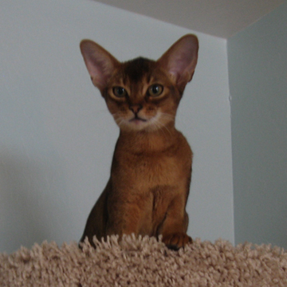

About Me
I began this migration to a full stack designer from a background in graphic design.
I like small snippets of things that by themselves arent much, but when all the pieces are put together, you have something spectacular. Thats why I Iike quilting, stained glass, and yes - coding. Its not only aesthetically a work of art, but servers a function as well. I think that makes the world a more enjoyable place to live.
Prior to entering the coding program, I worked in a graphic design position where I designed fundraising collateral for school sports and other non-profit organizations. While in this role I used Photoshop, InDesign, and Illustrator. Although my recent work experience has been in graphic design, I've always been fascinated by code and seeing how things work. For that reason, I enrolled in the University of Arizona coding program, to help me develop the coding skills that would best compliment my work in design.
Now as a soon to be graduate, I am excited about the road ahead and the opportunity to leverage both my graphic design and coding skills, proving myself to be the multifaceted and well-rounded developer companies seek. With my eye for layout and design I hope to bring a unique perspective that will allow me to continue honing my skills as a developer, but also becoming more proficient in my back end abilities.
Connect with Me